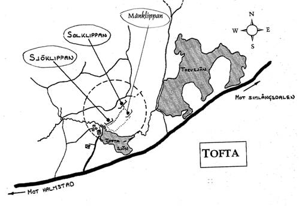
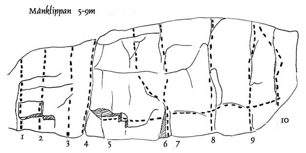

Månklippan (Skedala)
Lat: 56.702586
Long: 13.007426
Allmänt
Klippan är östvänd och har 10 leder klippan får inte mycket sol men torkar bra efter regn. Klippan är mellan 5-10m. En del av lederna är svåra att toppa ur på
Vägbeskrivning
Karta här. Tryck på kartknappen ovan.
</div>
Från Solväggen är det inte svårt att hitta, stå med Solväggen i ryggen och gå ca 200m rakt fram genom granskogen tills du når en ravin. Gå ned i ravinen och här ifrån ser du väggen på din högra sida.
Leder


- 1
- Abies
- 3-
- Trevlig och välsäkrad klättring men kort.
- 2
- Picea
- 3
- Starta i det lilla taket, sedan rakt upp.
- 3
- Pinus
- 3+
- Lite svår att toppa ur annars fin led.
- 4
- Nana
- 3-
- Har man inget bättre för såg så varför inte.
- 5
- Carpinus
- 6
- Börja traverserna vid överhänget och följ sprickbildningen hela vägen till höger.
- 6
- Buxus
- 6
- Upp i den lilla diederen sedan utsteg till vänster vid den markerade listen sedan rakt upp, ej välsäkrad.
- 7
- Taxus
- 6
- Samma insteg som Buxus sedan rakt upp, dåligt med säkrings möjligheter och svår att toppa ut.
- 8
- Giganteus
- 7
- En riktigt utmanade spricklinje, välsäkrad.
- 9
- Sorbus
- 6-
- Fin linje med crux på Mitten och i toppen
- 10
- Crategus
- 6-
- För dom som gillar kraftiga streckar men lite marig att toppa ur
Kontakt
För mer info och bilder kolla
Kategori:trad
Kategori:vertikalt
kategori:Saknar vägbeskrivning
kategori:Saknar koordinater
kategori:Saknar skrivarformatering
Category:Halland
Copyright (C) Permission is granted to copy, distribute and/or modify this document under the terms of the GNU Free Documentation License, Version 1.3